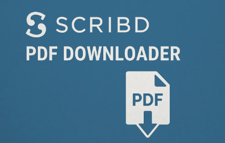
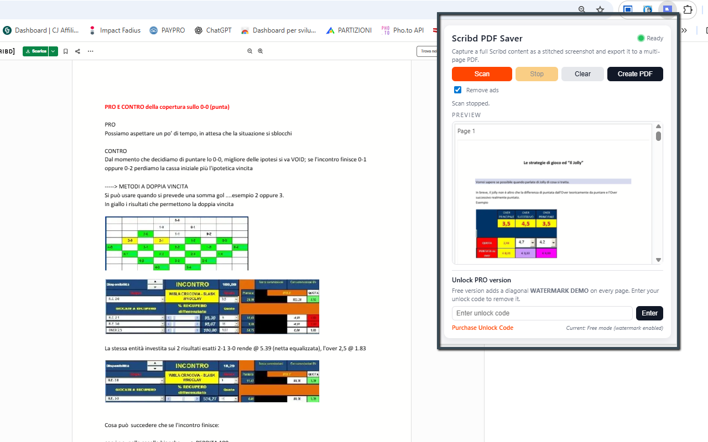

Scribd to PDF Saver
Scribd to PDF Saver is a Chrome extension designed to capture Scribd documents as clean, high-quality PDFs — page by page, directly from your browser. Instead of taking a single huge scrolling screenshot, the extension detects each visible Scribd page, zooms and centers it automatically, closes intrusive overlays/ads, and captures it as a separate high-resolution image. At the end, you can combine all captured pages into a properly paginated PDF, ready for offline reading, printing, archiving, or sharing.
The extension works on the live Scribd viewer you already use. When you click Scan, it scrolls the document automatically, page after page, using a smart per-page detection based on Scribd’s own canvas elements. Each capture is cropped to the central document area only (no browser chrome, no sidebars), and a live preview gallery inside the popup shows every page as soon as it’s captured. You can even stop scanning at any time and still generate a PDF from the pages collected so far.
Under the hood, Scribd to PDF Saver is optimized for quality: it adapts to different screen sizes and zoom levels, dynamically adjusts the page zoom to ensure that a full Scribd page fits within the viewport, and captures using Chrome’s built-in captureVisibleTab feature in PNG format. The extension then rebuilds a multi-page PDF where each captured screenshot corresponds to an individual PDF page, preserving the visual layout of the original document as closely as possible.
For user comfort, the extension can optionally hide Scribd advertisements and overlays during scanning (when the “clean capture” option is enabled), so your output is focused purely on content. It also defines a stop marker near the bottom of the page (for example, when a “Related titles” or “You might also like” section appears) to avoid capturing unrelated content below the document. This means your final PDF focuses only on the actual pages of the Scribd document, not the rest of the interface.
Install Scribd to PDF Saver from the Chrome Web Store✨ Key Features & Benefits
- Per-page capture: detects each Scribd page (canvas) and captures it individually, instead of a massive scroll screenshot.
- Automatic scrolling: the extension scrolls through the Scribd document for you, one page at a time, until it reaches the end or a defined stop marker.
- Adaptive zoom: automatically adjusts zoom so a full page fits in the visible area, independent of your monitor resolution or DPI.
- Clean document area only: crops each capture to the main document region, avoiding browser UI elements, surrounding background or overlays.
- Ad / overlay cleanup: optional “clean mode” closes Scribd ads and popups during scrolling to produce a more readable output.
- Live page previews: thumbnails of each captured page appear progressively in the popup while the scan is running (no need to wait until the end).
- Stop anytime: click Stop and still be able to generate a PDF with all pages captured up to that point.
- Multi-page PDF generation: every captured image becomes its own PDF page, scaled to fit inside an A4 layout with configurable margins.
- High-quality PNG capture: uses Chrome’s native capture API with PNG format to preserve clarity and text readability.
- PRO mode (optional): remove watermarks and unlock a fully clean output once you activate your license code.
In Free mode, the extension can apply a subtle “demo” watermark to exported PDFs to signal non-licensed usage. By entering a valid unlock code, you can switch to PRO mode: the watermark is removed, output looks fully professional, and you can use the tool as part of your daily research or document workflow. The unlock process is done directly inside the popup and the status is stored in local extension storage so you do not need to re-enter it every time.
🧭 How It Works
- Install Scribd to PDF Saver from the Chrome Web Store.
- Open any Scribd document in your browser (standard web viewer).
- Click the extension icon in the toolbar to open the popup.
- Optionally enable the “clean capture” mode to close ads and focus only on pages.
- Click Scan: the extension automatically scrolls through the document, capturing each page.
- Watch the preview list fill up with thumbnails for every captured page.
- Click Stop at any moment if you only need part of the document.
- When you’re ready, click Create PDF to build a multi-page PDF from all captured pages.
- Choose the download location in your browser; the PDF will be saved under your Downloads folder.
📷 Screenshots


🔒 Permissions & Technical Notes
Scribd to PDF Saver runs entirely inside your browser. It does not upload your documents or screenshots to any external server. The extension requests a small set of permissions in order to work correctly:
- activeTab: to interact with the current Scribd tab when you click the extension icon.
- tabs: to reload the Scribd tab with specific parameters (e.g. fullscreen mode) and listen for the page to finish loading.
- downloads: to save the generated PDF to your computer using Chrome’s built-in download dialog.
- storage: to remember your settings, PRO unlock status, and the last captured previews.
The extension does not bypass Scribd paywalls, subscriptions or access restrictions. It can only capture content that you can already see in your browser. If a page is locked, blurred, or restricted by Scribd, the extension will capture it exactly as displayed. Its purpose is to help you archive and read your accessible documents more comfortably offline, not to circumvent Scribd’s business model.
View Scribd to PDF Saver on Chrome Web Store